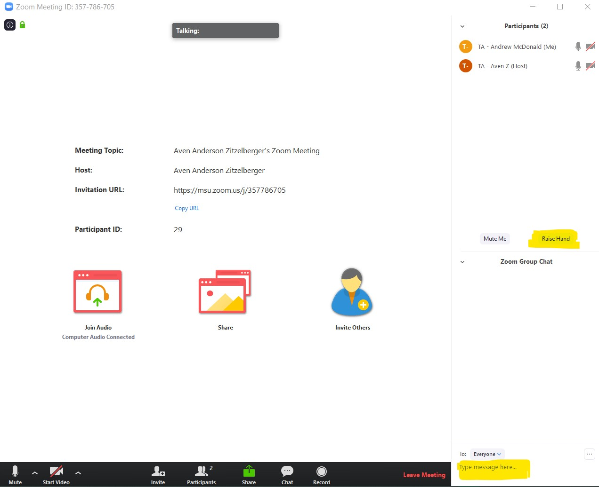
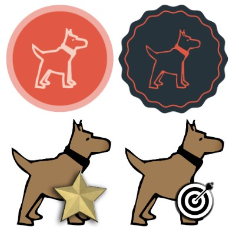
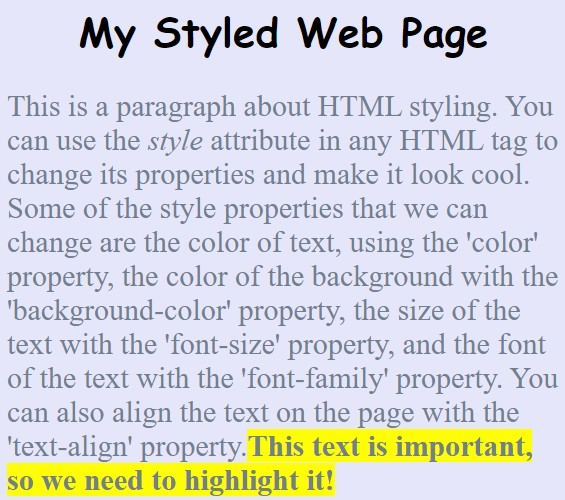

NEWS
Week 13
A Grand Finale
"In every end, there is also a new beginning."
-Libba Bray
Saturday marked the end of the 2020 session of SGWC, but in every end there is also a new beginning: the journey through computer science has only just begun for our students and mentors alike. While we'll certainly miss spending Saturday mornings smiling, laughing, and learning together, we look forward to seeing the continued growth and progress of all who took part in SGWC 2020 for years to come. Programming is a lifelong skill, and computational thinking will never fall obsolete − the end of SGWC 2020 is only symbolic. Our Spartan spirit and bond live on!
Of course, we were sure to go out with a bang − symbolic or not, the end always calls for a grand finale. Before a full recap of our final session, a few notes:
- • Saturday's (4/18) session marked the end of SGWC 2020. Stay tuned for further information about next year!
-
• We're always looking to improve, and would love your feedback in order to make SGWC 2021 even better! If you have
a moment, please fill out the parent post-survey below. If your student did not attend Saturday's session or did not
have a chance to complete the participant survey during the session, please encourage them to fill out the participant post-survey!
- • If you have any questions, concerns, comments or suggestions for us, we'd love to hear from you! Reach out to info@spartangwc.org, and be sure to stay tuned to our Remind channel. We'll be keeping an eye on our inbox throughout the summer!
Looking Ahead
Feedback
Contact
The 2020 SGWC (Virtual) Grand Finale kicked off with a reflective icebreaker, in which students discussed the following five questions:
Instead of generalizing our students' responses here, we encourage you to ask your daughter the same five questions yourself and hear what she has to say! The most powerful aspect of SGWC is not that students leave with a newfound knowledge of and interest in computer science, but that they grow as problem solvers, communicators, and collaborators, building self-confidence and self-trust along the way. What did your daughter find her greatest non-code takeaway to be?
With the icebreaker behind us, it was game time: splitting up into breakout rooms, students shared their very own JavaScript games with one another and had the chance to play their classmates' creations. In true SGWC spirit, students left one another compliments on each game, applauding each others' creativity, artistic vision, narrative prowess, and clever coding skills. Inspired by their peers' work, some students even left with new ideas to add to their game as a post-graduation challenge!
To get a sense of what students came up with, check out the final projects that students agreed to share here!
For the remainder of the session, students faced off in a game of Kahoot to review the HTML, CSS and JS concepts they've learned over the course of the spring. As usual, there was no shortage of laughter − it's impossible not to smile when racing the clock in a high-energy game of trivia against the backdrop of silly music. If students want to relive the experience, the Kahoot can be found here!
To say we ended on a high note would be an understatement − in light of this semester's unique challenges, we ended (quite literally) off the charts. Having adapted to unprecedented challenges in a journey through unmapped territory, our students, mentors, parents, and faculty alike deserve a round of applause for playing their part in an incredibly successful 2020 installment of SGWC. Just as each and every link in a chain gives it its strength, each and every individual who made SGWC possible this spring is to credit for the impact it has left.
It's only a matter of time before we return to normalcy − ten years from now, these times will be but a blip in our memories of 2020. Remember the bright spot of Saturdays mornings with SGWC, and keep an eye on the future. Encourage your student to unleash the problem-solving, can-do attitude of SGWC upon any challenge that comes her way, and she'll be amazed how far it takes her.
Even if she attends university elsewhere, a graduate of SGWC will always be a Spartan − and Spartans Will.
To a bright future,
-The SGWC Team
Week 12
From dreams to code
Those who complain that there's no room for creativity in code have never programmed − as our students learned firsthand this week, programming is as much of an art as it is a science. Armed with full creative control, students took the JavaScript game we've developed together over the past two weeks and made it their own. From a humble implementation of Pac-Man arose an intricate remix of Pokémon, an interactive simulation of ballet, a maze through musical notes, and a tribute to Super Mario, among other variations − our girls wasted no time realizing their visions.
Just as Walt Disney said "If you can dream it, you can do it," our girls would tell you: "If you can dream it you can code it!"

Before diving into the details, a few reminders:
- • Time flies when you're having fun − next week (4/18) marks the end of our Spring 2020 Spartan Girls Who Code session! As usual, we'll meet via Zoom (password SGWC2020) from 10a-12p. To celebrate the conclusion of a successful journey, students will have an opportunity to play each others' JavaScript games and leave compliments on one another's projects.
- • If students missed this week's session or would like to continue developing their JavaScript game over the coming week, the 4/11 tutorial can be found here.
-
• If your student attended the 4/11 virtual session of SGWC but did not fill out the pre-session attendance form
or post-survey, please encourage them to do so at the appropriate links below!
(note: most students filled it out at the end of our session, but a few left before doing so)
- • If you have any questions, concerns, comments or suggestions for us, we'd love to hear from you! Reach out to info@spartangwc.org, and be sure to stay tuned to our Remind channel.
Looking Ahead
Tutorial
Attendance & Feedback
Contact
Up to this point, the majority of our sessions began with a code-along, in which students would learn a new programming concept, followed by a brief opportunity for students to add their personal touch, changing images, colors, fonts, placement, and sizing, among other website attributes. Saturday's session turned that model inside out, giving students nearly the entire time to apply what they've learned this spring and make their game their own. Builing upon the simple grid-based, button-controlled JavaScript program shown and linked below, students' creations far surpassed our already-high expectations.

To empower our students' independence and individuality, we compiled ideas and tutorials in this Google Document and provided it for reference. Given that it's live on the web, we encourage students who are looking for a quarantine challenge to continue working through the tutorials they did not finish at this week's session! One of the best cures for boredom is an engaging programming project − a few hours here and there spent learning JavaScript will fly by in no time.
For the sake of suspense (and to allow students to continue working through the aforementioned tutorials over the course of this week), we'll wait to showcase student projects until next week's update. To get a sense of what they're working towards, though, check out the example projects our mentors put together in preparation of this week! Challenge your student to take our mentors' ideas to the next level!
With only one session remaining, we want to once again thank our students, parents, mentors, and advisors for their adaptability, empathy, positivity and passion − together, we've leveraged the sudden change to catapult into more learning, laughing, and smiles. In other words, you could say we've conquered the "new normal."
From our homes to yours,
-The SGWC Team
Week 11
JavaScript in Motion
Students brought their A-game four our fourth virtual session on 4/4, jumping back into a second week of JavaScript without missing a beat − following a brief review of functions, parameters, variables and conditionals, our girls transformed last week's skeleton project into the start of a grid-based video game! Who said programming couldn't be all fun and games?
Before diving into the details, a few reminders:
- • All in-person sessions of SGWC remain cancelled through the end of the academic year due to the COVID-19 outbreak, but virtual sessions will continue to be offered Saturdays through 4/18 from 10am-12p at this Zoom link. It's hard to believe we've got only two sessions left − time flies when you're having fun!
- • To mitigate the threat of "Zoom Bombing," a recently-developed phenomenon in which random individuals log into and disrupt Zoom meetings, we've protected our remaining Zoom meetings with the password SGWC2020. The meeting link to join our sessions remains the same.
-
• If your student attended the 4/4 virtual session of SGWC but did not fill out the pre-session attendance form
or post-survey, please encourage them to do so at the appropriate links below!
(note: most students filled it out at the end of our session, but a few left before doing so)
- • If your student was unable to attend the 4/4 virtual session, a tutorial walking through the content we covered can be found here.
- • If you have any questions, concerns, comments or suggestions for us, we'd love to hear from you! Reach out to info@spartangwc.org, and be sure to stay tuned to our Remind channel.
Looking Ahead
Zoom Privacy
Attendance & Feedback
Tutorial
Contact
Programming often earns a reputation for being dry, logical, and mechanistic, leaving little room for "fun and games" − yet, as our students can attest, that's simply not the case. Beyond JavaScript, HTML, and CSS, the smiles, laughter and jokes throughout this week's session made evident that our girls had learned a far more important lesson than the syntax and semantics of code: they learned that coding can be a blast!
Repurposing the website they created last week, students created two buttons: "Left" and "Right," then worked step-by-step to make such buttons move an image of their game's protagonist across the screen. So, how does it work? Ask your daughter to explain it to you!
A click of the button calls a function with a parameter indicating whether the character should "move left" or "move right," and depending on the value of this parameter, conditional (if-then) statements are executed to change the placement of the character's image on the screen relative to its previous position on the screen. Pretty neat, eh? Play around with the example website below, and ask your daughter to show you her own code!
While students focused on developing the JavaScript "muscles" behind their game this week, they'll have a chance to customize the HTML and CSS defining the aesthetics of their game next week to make it their own. Their character need not be Pac-Man; their background need not be white; their surroundings need not be empty − any image or geometrical shape will work! They'll have the chance to add "villains," "treasure," and "power-ups" in addition to background images, vertical motion buttons, and more. Programming is a creative activity, and our goal is for our students to see it as such!
On that note, it's worth mentioning that next week (4/11) will be our last programming-focused SGWC session; the following final session (4/18) will give students a chance to share their projects with one another and celebrate their achievements with virtual student-mentor team games. Time flies when you're having fun!
We again want to thank everyone for adapting so well to the new normal − in today's world, the only constant is change. Four weeks ago, the future of SGWC in 2020 was in limbo − but thanks to the passion of our students, encouragement from parents, flexibility of our mentors, and guidance of our advisors, we've made lemonade out of an unexpected shipment of lemons. As Admiral Grace Hopper, famed female computer scientist and pioneer of the modern compiler said, "the most dangerous phrase in the language is: 'we have always done it this way.'"

Together, we have found another way.
Stay healthy, safe, and curious this week − learn something new and share it with a friend!
From our homes to yours,
-The SGWC Team
Week 10
Coding Meets Coffee
Our third virtual session of the spring brought even more smiles, laughter, and "woah, that's awesome!"-s than the first two − students had a blast learning the basics of JavaScript and adding the dynamic, responsive tools it supports to their ever-growing skillset. As HTML defines the structure of a website and CSS defines the style of a website, JavaScript defines the actions and behavior of a website through the use of functions and parameters.
Before we get too technical, though, we've got a few key notes for the week!
- • All in-person sessions of SGWC remain cancelled through the end of the academic year due to the COVID-19 outbreak, but virtual sessions will continue to be offered Saturdays from 10am-12p at this Zoom link.
- • If your student attended the 3/28 virtual session of SGWC but did not fill out the post-survey, please encourage them to do so at this link! (note: most students filled it out at the end of our session, but a few left before doing so)
- • If your student was unable to attend the 3/28 virtual session, a tutorial walking through the content we covered can be found here.
- • If you have any questions, concerns, comments or suggestions for us, we'd love to hear from you! Reach out to info@spartangwc.org, and be sure to stay tuned to our Remind channel.
Looking Ahead
Feedback
Tutorial
Contact
Back to the question at hand: what does coffee have to do with coding? Sure, plenty of programmers enjoy a daily cup of java − but far more enjoy a daily dose of JavaScript. Designed for the web, JavaScript is used on nearly every website you visit in a given day and ranks as one of the most popular programming languages year after year. While HTML and CSS form the skeleton of a website, providing support and specifying structure, JavaScript is the muscular and nervous system, reacting to user input, keyboard presses, mouse clicks, and other events. Without JavaScript, the web is nothing more than a nicely formatted digital document; with JavaScript, it forms the foundation for countless applications, tools, games, and services we rely on every day.

Together, HTML, JavaScript and CSS form the major building blocks of modern websites.
Following a crash-course introduction to the fundamentals of JavaScript, students immediately got their feet wet, integrating JavaScript in their websites to display a pop-up message upon the click of a button. In this sense, students made their websites reactive, going beyond the 2D canvas of an HTML page and engaging in a third dimension with the user. Applying their newfound knowledge of JavaScript functions, which carry out a particular task (i.e., display a message), and parameters, which specify how a given task should be carried out, students experimented with different ways to change the text of their pop-up message. Check out the example website below for a sense of the power JavaScript brings to the web!
Next week, students will continue their journey through JavaScript to implement a game and integrate it with their Impact Project websites − there's no way we'd be able to accomplish that with only HTML and CSS. As in all creative activities, using the right tool for the job not only makes the job much easier, but makes it possible in the first place − programming is no exception!
Technical matters aside, we again thank our parents and students for such optimism and positivity during these times. Back by popular demand, we opened this week's session with a virtual icebreaker in which students could "virtually show-and-tell" their past week in the form of a GIF, meme, or image. Social distancing does not imply that social isolation must follow − we're all in this together!
Through jokes and anecdotes, our students continue to remind us why we established Spartan Girls Who Code in the first place: not only to increase female representation in computer science, but to make friendships, learn from one another, laugh with one another, and grow together.
As Spartans, Michiganders, and Americans, we wish you good health, safety, and continuity through the week ahead. We'll see you "four" our fourth virtual session next Saturday on 4/4!
From our homes to yours,
-The SGWC Team
Week 9
The New Normal
COVID-19 has been no match for the passion, resilience, and positivity of our students − this week's virtual session was attended by over 30 of them! Asking questions, writing code, sharing laughs and telling stories, our girls impressed and inspired us with their adaptability to the new normal. We can only hope they smiled as much as our mentors did!
Before giving a full recap of this week's session, we'd like to pass along a few notes:
- • All in-person sessions of SGWC are cancelled through the end of the academic year due to the COVID-19 outbreak, but virtual sessions will continue to be offered Saturdays from 10am-12p at this Zoom link.
- • If your student attended the 3/21 virtual session of SGWC but did not fill out the post-survey, please encourage them to do so at this link! (note: most students filled it out at the end of our session, but a few left before doing so)
- • If your student was unable to attend the 3/21 virtual session, a tutorial walking through the content we covered can be found here.
- • With all of the recent changes, we're sure you've got questions − feel free to reach out to us at info@spartangwc.org, and be sure to stay tuned to our Remind channel.
Looking Ahead
Feedback
Tutorial
Contact
This week, students harnessed their HTML and CSS powers to add a trivia quiz to their impact project websites. Asking questions about their impact project topic and using ordered lists to display answers, students thereafter had to "think outside of the page" in order to make their quiz interactive. By adding two additional new webpages to their site − one displaying "Correct!" and the other displaying "Wrong" − then cleverly linking their answers to these pages, our girls created fully-functioning quizzes. Clicking on the right answer redirects the user to the page displaying "Correct!" while clicking on a wrong answer takes the user to the page which displays "Wrong." Check out the link below for an example of this week's project!
In addition, students learned how to display GIFs and images on their website, and reviewed key CSS styling techniques, then applied such knowledge to spruce up the fonts, colors, and feel of their website. Our code-alongs have been a team-effort, but each student's styling is her own unique vision!
As productive as this week's session was, perhaps the true highlight came before we even kicked off the lesson − together, our mentors and students joined in on a virtual icebreaker to get comfortable using Zoom and speaking up over the airwaves. In response to the prompt "Describe your last week with a GIF, image, or meme," individuals shared their experience under quarantine by pasting GIFs, images, and memes into a shared Google Document, then took turns to tell a story about their "new normal." A little humor went a long way, and set spirits high for the rest of our session!
We're already looking forward to next week's (3/28) session, and hope you are too − in times like these, we're strongest together.
Rain, shine, or quarantine, Saturday mornings are for laughing, learning, and growing. Saturday mornings are for Spartan Girls Who Code.
Stay healthy & happy!
-The SGWC Team
Week 8
The Show Goes On
Unprecedented times call for unprecedented approaches − moving to a virtual format with such short notice wasn't easy, but was well-worth it! This week's inaugural Zoom SGWC session was a blast, attended by over 20 students. We hope to see that number rise even higher next week!
Before giving a full recap, we'd like to pass along a few notes:
- • All in-person sessions of SGWC are cancelled through the end of the academic year due to the COVID-19 outbreak, but virtual sessions will continue to be offered Saturdays from 10am-12p at this Zoom link.
- • Regardless of whether your student attended the 3/14 virtual session of SGWC, we'd appreciate your feedback as we make the transition to virtual sessions. Please take a minute to fill out this Google Form!
- • If your student was unable to attend the 3/14 virtual session, a tutorial walking through the content we covered can be found here.
- • With all of the recent changes, we're sure you've got questions − feel free to reach out to us at info@spartangwc.org, and be sure to stay tuned to our Remind channel.
- • Future virtual sessions will be recorded via Zoom for students to playback afterwards − this week, we forgot to hit record!
Looking Ahead
Feedback
Tutorial
Contact
Zoom

Students continued to dive deeper in their impact projects this week, adding a new "Videos" page to their website and embedding YouTube videos within. Further, students configured a navigation bar for their website to easily and swiftly transition between pages. By clicking on the home icon, students' websites would navigate to the homepage; by clicking on the video icon, students' websites would navigate to the "Videos" page containing embedded YouTube videos. Finally, students broadened their knowledge of CSS and added additional style rules to their website, changing font sizes, text and background colors, alignment, and more to make their site their own!
For students, this week's session doubled as an introduction to video conferencing and remote education, the "new normal" of the coming weeks; for mentors, this week's session doubled as the same! Over the next few sessions, we'll continue to experiment on what works and what doesn't in the virtual setting, and change our approach accordingly.
We applaud our girls for adapting so quickly and for bringing unconditional positivity to this week's session! In spite of the circumstances, their excitement and readiness to learn brought smiles to our faces.
Preliminary feedback at the end of our virtual session was overwhelmingly positive, but we know there's room for improvement. Regardless of whether or not your student tuned into the 3/14 virtual session, we'd like to gather your thoughts on virtual sessions moving forward with a quick survey. Taking a minute to fill it out will help us make next week's session even better!
Through times like these, continuity is a rare commodity − we thank parents and students for sticking with us through rapid change.
Here's to more learning, laughing, and love for code ahead!
-The SGWC Team
Going Virtual
Virtual Sessions Begin March 14
First and foremost, we wish you all good health and good spirits through these unprecedented times − though change is frightening, optimism is the best remedy. Together, we will persevere!
Following Michigan State University President Stanley's March 11 directive to cancel all in-person gatherings through April 20, all SGWC sessions have been cancelled through April 20. Social distancing has proven to be the most effective way to prevent the spread of coronavirus, and we must all do our part. Although we will certainly miss interacting with SGWC students for the coming weeks, the health and wellness of our participants, parents, mentors, and faculty is of paramount importance.
In spite of the circumstances, we want to continue to offer the educational opportunity of SGWC to the best of our ability. Thus, we have made plans to implement (optional) virtual sessions beginning Saturday, March 14 for students who would like to stay involved and continue to learn the fundamentals of web design.
We will be offering such virtual sessions through Zoom, a free virtual meeting platform. Students can join the Zoom session by clicking the link below anytime after 9:30am on Saturday mornings. Upon clicking the link, you will be automatically prompted to install the free Zoom software client if you do not already have it installed.
Although we're still ironing out the details of how virtual sessions will work, our tentative plan is as follows:
- 1. Students are welcome to join the meeting anytime − instruction will begin slightly after 10am. We encourage students to join early if possible to work out any technical difficulties.
- 2. A lead instructor will work through a code-along on CodeHS, engaging with students through questions and conversation, and will share their screen on Zoom for students to see.
- 3. Students may follow along and write their own code on CodeHS as the instructor works.
- 4. A co-instructor will be available to work with students 1:1 and answer individual, in-depth questions by utilizing Zoom breakout rooms.
- 5. Other questions can be asked and answered by anyone in the session through the Zoom group chat.
- 6. Students can raise their hand by clicking a "raise hand" button in the session.
- 7. Following the introduction of a new web design topic (e.g., including video on a website, animating features on a website, making "quiz" questions on a website, embedding content in websites, etc.), students will put the new topic into use by adding content to their impact project website.
If you're new to Zoom, you may find the following resources helpful − it's quite user-friendly!
A screenshot of the Zoom meeting interface
Please don't hesitate to reach out to us at info@spartangwc.org with any questions, comments, ideas, or concerns as we make the transition to virtual sessions. Again, if your student is unable to join us for virtual sessions, do not worry − they are fully optional and are being offered for a sense of continuity as we navigate uncharted waters. Tomorrow's (3/14) virtual session will serve as a test run for us to fine-tune our approach to virtual delivery.
We once again wish you all good health and good spirits over the coming weeks. Stay safe, and stay united as Michiganders!
-The SGWC Team
COVID-19 Update
All SGWC Events Cancelled Through April 20, Effective March 11
Following the confirmation of two COVID-19 cases in the State of Michigan last night (3/10), Michigan State University is cancelling all face-to-face programs and events out of an abundance of caution through April 20th. Unfortunately, this includes Spartan Girls Who Code.
We are currently evaluating our options to offer remote sessions or alternative instructional methods, and will notify parents as further information becomes available.
Please see the statement below from Teresa Isela VanderSloot, Director for Women in Engineering, Recruitment and K-12 Outreach with the College of Engineering.
Stay healthy!
-The SGWC Team
Week 7
Springing Forward
Planning is one thing − doing is another. This week, our students moved from ideas to implementation and began coding their impact projects, in which they'll connect computer science to a passion of their choice. As we've emphasized over the course of the spring through spotlight videos and talks, computing can take you anywhere! Every major corporation, organization, and non-profit needs a website and IT infrastructure, perhaps in addition to an e-commerce storefront, AI chatbot, mobile app, or logistics management program. Google is certainly hiring computer science graduates like crazy, but so are clothing companies, medical conglomerates, food corporations, academic institutions, and art galleries!
Before giving a full recap, we'd like to pass along a list of important notes:
- • SGWC will resume meeting on Saturday, 3/14 following the two week hiatus due to MSU's spring break.
- • SGWC is closely monitoring the developing COVID-19 situation and will adhere to MSU's policies to prevent and respond to a potential outbreak. If MSU cancels in-person classes in response to COVID-19, SGWC will follow suit and cancel in-person sessions. Depending on the severity of circumstances, SGWC may instead offer remote sessions through Zoom and CodeHS. If you do not feel comfortable sending your child to SGWC due to the COVID-19 situation, please send us an email at info@spartangwc.org and we will do our best to arrange remote attendance options.
- • While no cases of COVID-19 have been confirmed in the State of Michigan as of 3/9/2020, we will be wiping down all keyboards, monitors, tabletops, door handles, and other surfaces with disinfectant wipes prior to Saturday's (3/14) session and distributing hand sanitizer to mentors and participants out of an abundance of precaution. As always, mentors have been instructed to stay home if they feel sick, and parents are advised not to send their students if they feel unwell or display symptoms of any illness.
- • Although we currently do not plan to host a session of SGWC on 3/28 due to some school district spring breaks, we noticed that the majority of students have spring break over the week of 4/6-4/10. As such, we are considering adding a SGWC session on 3/28 to give students more time to work on their impact projects and advance their understanding of web design. Please fill out this form to let us know if your student would be able to attend a 3/28 session, and we will let parents know if we decide to add such a session in next week's update.
- • Students are encouraged to create an "About Me" website to refresh their HTML and CSS skills before Saturday's (3/14) session by creating an HTML5 project in CodeHS Sandbox − one of our mentors, Sarah, put together a wonderful example for inspiration. Note: this assignment is fully optional but will help students knock off the spring break rust!
- • Parents and family members should save the date of Saturday, 4/18 from 10a-12p for the Spring 2020 SGWC Final Celebration − more information is included below!
- • There are no make-up assignments for students who missed the 2/22 session of SGWC, as their groupmates began work on their group's impact project.
This Week
COVID-19
Added Session
Optional Refresher
Save the Date
Absences
Before diving into their impact projects, students first heard from Cynthia Williams and Judy Asher of Ford in a live spotlight discussing the importance of diversity and persistence in STEM. Cynthia and Judy earned their BSs in Mechanical Engineering and Computational Mathematics, respectively, from Michigan State before continuing on to earn MBAs and transitioning into leadership positions; they each brought unique perspectives and shared valuable lessons from their journies. Emphasizing the future demand for engineers and computationally-savvy problem solvers, Cynthia and Judy left quite an inspiring message: if STEM is your passion, keep pushing forward and embrace a growth mindset!
Cynthia Williams
Director, Sustainability, Homologation and Compliance at Ford
Judy Asher
Manager, Enterprise Technology Research at Ford
Having brainstormed an initial list of impact project ideas last week, students then broke into groups of 2-4 to begin scaffolding the HTML and styling the CSS of their very own websites investigating the connections between computer science and fields such as art, drawing, animation, music, singing, sports, forensics, and investigation. Although their work is still in its early stages, the progress students made in a single Saturday was impressive! A quick walk around the room at the end of the session made clear that the syntax, semantics, and structure of HTML and CSS covered in the prior four weeks of instruction had stuck.
Of course, the best way to learn is by doing − we expect students to continue growing and becoming more comfortable with the concepts of web design in the final weeks of Spartan Girls Who Code!
Speaking of the final weeks of Spartan Girls Who Code, time flies when you're having fun! Believe it or not, we've only got a few sessions of SGWC remaining: 3/14, 3/21, (possibly) 3/28 (see bulleted note above), and 4/18. That is, SGWC will not meet on 2/29 or 3/7 due to MSU's spring break, and will not meet on 4/4 or 4/11 due to East Lansing and Okemos Public Schools' spring break.
On another forward-looking note, we'd like to invite all parents, siblings, and family members of 2020 SGWC students to our final session from 10a-12p on Saturday, 4/18, where students will be presenting their impact projects for all to see prior to a pizza luncheon for all to enjoy. We'll send out an RSVP form to parents in the coming weeks in order to gauge seating requirements and plan pizza ordering − but for now, be sure to save the date!
Spring 2019 SGWC Final Celebration
Next week, following the two week hiatus due to MSU's spring break, students will review the HTML constructs and CSS rules they've learned this spring before resuming work on their impact projects. In the meantime, enjoy this week's photos!

We'll see you next Saturday − enjoy the extra hour of daylight!
-The SGWC Team
Week 6
Show and Tell
Just as the best authors show a story, so too do the best web designers − telling is only the beginning. HTML, or HyperText Markup Language, allows one to tell a story on the web, rendering titles, aligning paragraphs, specifying spacing, and supporting hyperlinks. CSS, or Cascading Style Sheets, is where the true fun begins, and where our adventure continued this week − CSS empowers a programmer to show.
Before giving a full recap, we'd like to pass along a few important reminders:
- • The 2020 Introduce a Girl To Engineering Day hosted by the Michigan State University College of Engineering on Saturday, February 22 will begin shortly after the dismissal of next week's session; we apologize in advance for any traffic this may cause during pick-up. If your student has enjoyed SGWC thus far, and would like to learn more about the wide world of engineering, registration is open through noon on Thursday, February 20.
- • Saturday's session will be the last prior to MSU's spring break; the next SGWC session after February 22 will be March 14. In the meantime, we'll have a project for curious students to work on!
- • If your student missed this week's session, please see this document. In particular, be sure to have your student fill out this form gauging final project interests if they are in the Senior Club!
As introuduced last week, CSS is analogous to the furniture and decor in a home, while HTML comprises the
foundation and floorplan. By specifying style rules within a .css file, students learned
to efficiently customize attributes such as font, font size, text color, background color, and text alignment
across their entire webpage using only a few lines of code in this week's lesson, eliminating the tedious
process of setting styles one element at a time introduced last week. In some sense, style rules are like
a "replace all" operation; by creating a style rule for the <p> tag in CSS, students
could reset the style of all paragraph text on their page in one fell swoop. Instead of replacing a string of text
as a "replace all" operation might do in Microsoft Word, however, a CSS rule simply replaces style!


Hence, this week's lesson went beyond aesthetics − students learned the core programming principle of minimal redundancy. Why specify a style rule on every single header in your website when you can specify it once and apply it uniformly with only a few lines of code?
Students applied their new style superpowers to a handful of open-ended exercises, one of which challenged them to build a website about their favorite band or musical artist. Wouldn't you say their creations rocked?
In place of this week's spotlight, students began brainstorming ideas for their impact projects, where they'll combine their interest in computer science with a passion of their choice and create a website discussing the connection between the two. From medicine to travel, sports to art, music to movies, and beyond, computer science finds applications in nearly every avenue of 21st-century life − as our students will find through their research, you can work just about anywhere as a programmer. Code is the modern professional's Swiss Army Knife!
Next week, students will begin working on their impact projects and review all the HTML and CSS they've learned thus far. In the meantime, enjoy the photos from this week!
We'll see you next Saturday − stay stylish!
-The SGWC Team
Week 5
Picture This
If a picture's worth a thousand words, then our students have become quite prolific writers − this week, our girls
learned how to embed images in their websites using HTML.
Students didn't stop there, however − this week, they also began to explore the wide world of
CSS, or Cascading Style Sheets,
by editing the style attribute of their HTML tags,
giving them control over the visual appeal of their webpages.
Before giving a full recap, we'd like to pass along a few important reminders:
- • Registration for the 2020 Introduce a Girl To Engineering Day hosted by the Michigan State University College of Engineering on Saturday, February 22 remains open until capacity is reached − if your student has enjoyed SGWC thus far, we encourage them to attend and explore other domains of engineering!
- • If your student missed this week's session, please see this document.
Whereas HTML comprises the foundation of a webpage by specifying form and function, CSS
constitutes the wallpaper, carpet, furniture, and decor by specifying a plethora of stylistic attributes. By
including a style attribute in the tags of their HTML document and writing a handful of CSS statements,
students learned to change the font, font size, text color, text alignment, and background color of various webpage elements using the
font-family, font-size, color, text-align,
and background-color CSS attributes, respectively.
To get a sense of these newfound aesthetic superpowers, check out the webpages students created this week!


Before diving into code, students were treated to a live spotlight this week, hearing from Katie Sydlik-Badgerow, an MSU alumna of the Class of 2019. Instrumental in the leadership of last year's Spartan Girls Who Code program, Katie currently works as a Software Engineer with Target in Minneapolis, MN. After telling her story, explaining what a day in the life of a software engineer looks like, and discussing how her involvement in SGWC helped her reach where she is today, Katie opened things up for a lively Q&A session. Far from shy, students made the most of their time engaging with Katie!


Next week, students will continue their exploration of CSS and all it has to offer − as one might imagine, we've only begun to scratch the surface when it comes to making use of its power. In particular, students will learn how to create a separate CSS document specifying style attributes for their entire webpage at once, eliminating the need to specify styles one element at a time. Until then, curious students are encouraged to explore "CSS in the Wild" by pressing "F12" in their browser and investigating the "Styles" tab of the Developer Tools menu as shown below. Try to find 5 CSS attributes you haven't learned about yet!
Photos from this week's session can be found here
− it's fitting that I've used <img> tags to embed a few below!
We'll see you next Saturday − keep being awesome!
-The SGWC Team
Week 4
Off to the races
You'd never be able to tell we'd gotten a late start to the program if you'd seen our students breeze through this week's lesson on HTML − our girls brought a true Week 4 mentality to the second week of instruction. Curious, excited, energetic, and driven to learn, they dove deeper into the semantics of HyperText Markup Language, or HTML to build their own formatted and linked webpages!
Before giving a full recap, we'd like to pass along a few important reminders:
- • Students are encouraged to bring their own reusable water bottles to SGWC − the Engineering Building offers numerous filtered water refilling stations for use. In order to reduce our environmental footprint, we'd like to avoid providing bottled water and/or paper cups. Please label water bottles with your student's first and last name!
- • Parents are reminded that the designated drop-off and pick-up location for SGWC is the Engineering Building circle driveway adjacent to Red Cedar Road. Click here for directions.
- • Registration for the 2020 Introduce a Girl To Engineering Day hosted by the Michigan State University College of Engineering on Saturday, February 22 remains open until capacity is reached − if your student has enjoyed SGWC thus far, we encourage them to attend and explore other domains of engineering!
- • If your student missed this week's session, please see this document.
Following a lively icebreaker in which students bonded over what makes them "rockstars," we heard from Robin Hunicke in this week's spotlight . Co-founder and CEO of Funomena Games and Professor of Game Design at UC-Santa Cruz, Robin shared how programming can lead to positive impacts beyond what meets the eye. Discussing how her work as a video game designer and producer helps to connect her audience through empathy and creativity, Robin encouraged us to build our dreams with code!
Motivated by Robin's message, our students then dove into this week's CodeHS lesson introducing HTML, following the lead
of SGWC student mentors to work through a series of code-alongs and interactive exercises. Learning how to properly
format an HTML page using the <!DOCTYPE html>, <html>, <head>,
<title> and <body> tags, then making use of the
<b>, <i> and <u> tags to embolden, italicize and
underline text, students formatted a web-friendly encyclopedia entry to show off their skills. Pushing further, they
even learned how to render links in their HTML page and assembled a list of their favorite websites!


Students who finished early were encouraged to explore "HTML in the wild" by making use of their web browser's Developer Tools functionality − by pressing "F12" or right-clicking on a webpage and selecting the "Inspect Element" menu option, students could see the source HTML of any website on the internet. Try it at home!
Next week, students will learn how to embed images in their HTML pages and explore the wide world of CSS, or Cascading Style Sheets. If HTML is the blueprint to a webpage, then CSS is the furniture, wallpaper, paint, and decor inside − whereas HTML defines the structure of a website, CSS defines the aesthetics. Web design is all about the relationship between form and function; next week's lesson will bring this relationship full circle!
Photos from this week's session can be found here − who said being focused couldn't be fun?

We'll see you next Saturday − until then, make it a great week!
-The SGWC Team
Week 3
THIRD TIME'S THE CHARM
If there's one takeaway from the chaotic start to our Spring 2020 installment of Girls Who Code, it's that persistence certainly pays off − our belated kickoff was a major success!
Students and mentors introduced themselves by way of an extreme rock-paper-scissors match to break the ice, then shared what they've done with computers before and how they hope to combine coding with something else they're passionate about in the future. To get an idea of what they'll be learning and building towards in SGWC, students explored the impact projects which last year's junior club and senior club students created, and even began to brainstorm ideas for their own impact projects!
Next, students heard from Fran Kalal, a Technical Director at Pixar Animation Studios who uses computer science in her career to tell stories and connect with her audience in this week's spotlight video. Each club discussed the wide range of creative activities to which programming can be applied, and got creative with code themselves to step in Fran's shoes and animate characters from Pixar's Inside Out in one of Google's Made With Code challenges.
Following this high-energy start, students were introduced to the learner profile and key attributes of a "Girl Who Codes," laid out by the national Girls Who Code organization of which Spartan Girls Who Code is a chapter. Each club discussed the importance of a growth mindset, curiosity to ask questions, and fearlessness to explore the unknown, incorporating such values into a group-authored Club Contract. Much like a sport, mentors emphasized how learning to code requires grit, passion, and practice − but there's no doubt our girls are up for the challenge!
Finally, students were introduced to the platform we'll be making use of this spring to teach web design:
CodeHS.
Trying their hand at the first module, students learned what HTML is and how it forms the blueprint of a webpage. Combining
text, media, and formatting all in one document, HyperText Markup Language (HTML) tells a web browser how to display information
on a website through the use of tags. Using the <h1> tag, students created their very own webpage to display
"Hello Worldwide Web!"
Photos from this week's session can be found here − as the smiles tell, Week 1 was a blast!
We look forward to diving deeper into
web design next Saturday; until then, we wish our students, parents, mentors, and faculty a wonderful week!
-The SGWC Team
Week 2
SNOW JOKE
It's a shame there's no code governing the decisions of Mother Nature − if there were, we would've fixed the Saturday-Snowday bug after Week 1!
We're certainly disappointed in having been forced to cancel last Saturday's meeting for a second week in a row, but appreciate your understanding of the circumstances − after all, we live in Michigan! The safety of our students, parents, mentors, and faculty comes first − coding can wait. The weather's been snow joke!
In preparation for our first session this coming Saturday, January 25th, we'd like to remind parents of our drop-off and pick-up procedure to ensure all runs smoothly. Mentors will be waiting in the main lobby of the Engineering Building at the corner of S. Shaw Ln. and Red Cedar Rd. between 9:40-9:55am prior to the session's 10:00am start to lead students to the computer labs in which instruction will take place, and will return with students to the main lobby following the 12:00pm conclusion of the session by 12:05pm to be picked up no later than 12:15pm.
Parents are to use the circle driveway adjacent to the Engineering Building accessible from Red Cedar Rd., just south of the intersection with S. Shaw Ln. (see map below) for drop-off and pick-up − please do not drop students off at the curb of S. Shaw Ln., as this is a busy road and will block traffic.
As a reminder, any weather-related cancellations will be emailed to parents and posted on a banner across the top of the SGWC website no later than 8am on Saturday morning. To receive direct notifications regarding cancellations via text, please text @2020sgwc to 81010 or visit this link to sign up for our Remind. As the program winds up, we'll send a link to our weekly news update via Remind − be sure to sign up to stay in the loop!
We look forward to the learning, growth, inspiration, and excitement in store throughout the Spring 2020 installment of Spartan
Girls Who Code ahead!
-The SGWC Team
Week 1
A slippery start
In spite of last Saturday's ice storm and the cancellation of our first planned session of Spartan Girls Who Code, we look forward to welcoming our 2020 class of students to campus this weekend! We've enjoyed our winter break and used our time away from classes to prepare for an action-packed spring at SGWC − we'll be hitting the ground running to kick off our journey through JavaScript, HTML and web design sooner than later!
As a reminder, any weather-related cancellations will be emailed to parents and posted on the front page of the SGWC website no later than 8am on Saturday morning. To receive direct notifications regarding cancellations via text, please text @2020sgwc to 81010 or visit this link to sign up for our Remind. If the forecast for an incoming storm looks to be formidable, a cancellation notice may be sent out as early as Friday afternoon.
If your student is itching to accelerate their adventure through computing this spring, we encourage you to look into a brand-new program offered by the Grand Ledge Area District Library: "Code Club!" will run on Wednesday evenings from 6-7pm beginning January 15th. As noted on the program website, the program is open to students aged 8-18, requires no prior coding knowledge, and will guide participants to create "websites, video games, apps, animations, and more." Students will even have the opportunity to earn Girl Scouts, Boy Scouts, Cub Scouts, or merit badges through their participation!
Furthermore, we encourage curious students to explore the SGWC Resources page, and to check out the online learning platform CodeHS, which we'll be using in our course over the coming weeks. In addition, they may wish to consider attending one of the summer programs or outreach programs offered by the Michigan State College of Engineering; in particular, Introduce a Girl To Engineering Day on Saturday, 2/22 would pair nicely with the morning's SGWC lesson for a full day of fun!
We look forward to kicking off the Spring 2020 installment of SGWC this Saturday − join us in crossing our fingers that the weather cooperates!
-The SGWC Team
New Year, New Club!
As we prepare to kick off the Spring 2020 installment of SGWC, we've archived the web materials from Spring 2019. They can be found here, or from the Clubs > Past SGWC Clubs tab on the menu bar.